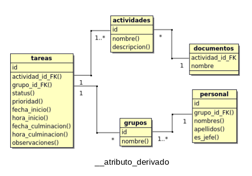

| Tecnologia | Sintaxis | Descripcion |
|---|---|---|
| MySQL |
0.- Crear proyecto en BOUML: Menu "Project"->New; luego en el browser (con click derecho):
new class view->new class diagram->new class. 1.- Definir entidades: nombre y breve descripcion de cada una. 2.- Definir relaciones: incluyendo su cardinalidad minima y maxima. * Cardinalidad minima: 0 - la entidad se relaciona de manera opcional. Su existencia NO depende de participar en la relacion. 1 - la entidad se relaciona de manera obligatorio. Su existencia SI depende de participar en la relacion. Ej: Una actividad (fuerte) NO necesita documento pero un documento (debil) SI una actividad. * Cardinalidad maxima: 1 - la ocurrencia puede relacionarse con solo una de la otra entidad. n - la ocurrencia puede relacionarse con varias a la vez. 3.- Definir atributos: pueden ser simples o compuestos. Se debe especificar cuales son derivados (calculados a partir de otro). 4.- Realizar el diagrama correspondiente al diseño logico * Si las entidades tienen PRIMARY KEY (PK) son llamadas "fuertes/padre" sino son llamadas "debiles/hijo". * Cada ocurrencia de una entidad debil se relaciona con una y solamente una ocurrencia de la entidad fuerte de la que depende. por esto en la entidad debil se debe crear una FOREIGN KEY (FK) enlazada a la PK de la entidad fuerte. - RELACIONES BINARIAS ENTRE ENTIDADES FUERTES: en este tipo de relaciones la tabla hija absorbe la relacion y se le asigna una FK. Segun la cardinalidad maxima de los atributos relacionados esta puede ser: * Uno a uno: la entidad hija es la que participa de manera oblogatoria, la que tiene cardinalidad minima 1. * Uno a muchos: la entidad hija es la de cardinalidad maxima 1. * Muchos a muchos: se crea una tabla intermedia para almacenar las ocurrencias de la relacion. Esta tabla contendra una FK a cada una de las tablas correspondientes a las entidades participantes, ademas de incluir los atributos de la relacion. Ninguna de las FK aceptara nulos. La PK de esta tabla seran las dos FK si la relacion no tiene atributos, o un atributo de la relacion que pueda ser PK. En las relaciones "Uno a Uno" y "Uno a Muchos" tambien es posible usar una tabla intermedia, pero no es obligatorio como en el caso "Muchos a Muchos". Esto se puede hacer para tratar de favorecer los accesos mas frecuentes y/o que requieran un tiempo de respuesta menor. 5.- Normalizacion |
WORKFLOW - CREACION DE BASE DE DATOS

Cardinalidad => (minima, maxima) Relaciones: actividades (0, *) <=> (1, 1) documentos - Una 'act' PUEDE no tener 'doc' o tener muchos - Un 'doc' DEBE estar asociado a una y solo una 'act' actividades (1, *) <=> (1, 1) tareas - Una 'act' DEBE estar asociada a una o mas 'tar' - Una 'tar' DEBE estar asociada a una y solo una 'act' grupos (0, *) <=> (1, 1) tareas - Un 'gr' PUEDE no tener 'tar' o tener muchas - Una 'tar' DEBE estar asociada a uno y solo un 'gr' grupos (1, *) <=> (1, 1) personas - Un 'gr' DEBE estar asociado a una o mas 'per' - Una 'per' DEBE estar asociada a uno y solo un 'gr' |
| MySQL |
mysql -u root -p (/opt/lampp/bin ruta en xampp) ALTER USER 'root'@'localhost' IDENTIFIED BY 'NEW_PASSWORD'; |
Abre la consola con el user y password especificados Cambiar clave del usuario con el que entro en la consola (root en este caso) |
| MySQL |
SELECT COLUMN_NAME AS 'ColumnName' ,TABLE_NAME AS 'TableName' FROM INFORMATION_SCHEMA.COLUMNS WHERE COLUMN_NAME LIKE '%country%' ORDER BY TableName, ColumnName; |
Buscar columnas y vistas en toda la DB segun el LIKE especificado |
| MySQL |
SELECT * FROM INFORMATION_SCHEMA.KEY_COLUMN_USAGE WHERE POSITION_IN_UNIQUE_CONSTRAINT IS NOT NULL |
Muestra todas las FOREIGN KEY de la base de datos |
| MySQL | USE ['nombre_base_de_datos']; | Asigna la Base de Datos con la que se quiere trabajar |
| MySQL | DESCRIBE ['nombre_tabla']; | Muestra el nombre de los campos que conforman la tabla, su tipo de dato, si admite nulos, cuales son PRIMARY KEY o FOREIGN KEY, su valor por defualt e info extra (si es auto_increment u otros) |
| MySQL |
SHOW Databases; o SHOW Tables; |
Muestra una lista con todas las Base de Datos almacenadas en el equipo o Muestra una lista con los nombres de todas las tablas de la Base de Datos |
| MySQL | ALTER TABLE [nombre_tabla_actual] RENAME TO [nuevo_nombre]; | Cambia el nombre de una tabla |
| MySQL | ALTER TABLE [nombre_tabla] CHANGE [nombre_actual_columna] [nuevo_nombre_columna][tipo de dato][restriccion]; | Cambia el nombre de una columna |
| MySQL | ALTER TABLE [nombre_tabla] ADD CONSTRAINT [nombre_restriccion] [restriccion(columna_objetivo)]; | Agrega una restriccion a una columna |
| MySQL | NULLIF(valor1, valor2); | Si ambos valores son iguales devuelve nulo, sino devuelve el valor1 |
| MySQL |
CREATE TABLE ['nombre_tabla'] ( ['nombre_columna'] [tipo_dato] [constraint], CONSTRAINT ['nombre_pk'] PRIMARY KEY ([columna1], [columna2]), CONSTRAINT ['nombre_fk'] FOREIGN KEY ([columna1], [columna2]) REFERENCES ['nombre_tabla_ref'](['nombre_columna_ref']) [MATCH FULL | MATCH PARTIAL] ON UPDATE [accion] ON DELETE [accion] )ENGINE=InnoDB; CREATE TABLE codventa_resets ( id int AUTO_INCREMENT NOT NUll, idventa int NOT NUll, created_at timestamp DEFAULT CURRENT_TIMESTAMP, CONSTRAINT codventa_reset_pk PRIMARY KEY (id), CONSTRAINT ventas_fk FOREIGN KEY (idventa) REFERENCES ventas(idventa) ON UPDATE CASCADE ON DELETE CASCADE )ENGINE=InnoDB; |
Si la FOREIGN KEY esta formada por varias columnas y admite nulos se puede establecer: - MATCH FULL: todas las columnas de la FOREIGN KEY tienen valor o ninguna de ellas lo tiene. - MATCH PARTIAL: permite las FOREIGN KEY parcialmente nulas. Se pueden establecer 4 comportamientos [accion] para cada FOREIGN KEY cuando se borra o actualiza el valor referenciado, es decir, el valor original en la PRIMARY KEY: - NO ACTION o RESTRICT: produce un error, no permite borrar ni actualizar. - CASCADE: borra/actualiza las filas que hacen referencia al valor borrado/actualizado. - SET NULL: pone un nulo en las filas donde se hacia referencia al valor borrado/actualizado. - SET DEFAULT: pone el valor por defecto en la filas donde se hacia referencia al valor borrado/actualizado. |
| MySQL |
CREATE TRIGGER [nombre_trigger] [TIME] [EVENT] ON [nombre_tabla] FOR EACH ROW [NEW_STATEMENT]; |
TIME determina cuando se ejecuta la accion del trigger, puede ser: BEFORE ejecuta el trigger ANTES de la accion AFTER ejecuta el trigger DEPUES de la accion EVENT es la accion que realiza el trigger, puede ser UPDATE o DELETE o INSERT NEW_STATEMENT es la query que ejecutara el trigger. Ej: INSERT INTO, UPDATE, etc. En el NEW_STATEMENT se debe especificar si usar el valor previo o posterior al ACTION. Para ello se usan los prefijos "OLD." (valor previo) y "NEW." (valor posterior) en los nombres de los campos de la tabla de origen de los datos, ya que son los que se asignan como valores. EACH ROW o EACH STATEMENT (Averiguar que opciones hay) |
| MySQL | DROP TRIGGER ['nombre_trigger']; | Borra el trigger seleccionado. |
| PostgreSQL | sudo su - postgres | Login con el usuario postgres, que es superusuario por defecto |
| PostgreSQL | psql | Entra a la consola postgres |
| PostgreSQL | psql -U [nombre_usuario] [nombre_db] | Accede a la base de datos con el usuario especificado |
| PostgreSQL | \q | Salir de la consola |
| PostgreSQL | \h [comando] |
Muestra la ayuda DENTRO de la consola para los comandos SQL. El [comando] es opcional. Presiona "q" para salir de la ayuda. |
| PostgreSQL | \? |
Muestra la ayuda DENTRO de la conexion a la consola. El [comando] es opcional. Presiona "q" para salir de la ayuda. |
| PostgreSQL | psql --help | Muestra la ayuda FUERA de la conexion a la consola |
| PostgreSQL | \l | Muestra la lista de las bases de datos |
| PostgreSQL | \c [nombre_base_datos] |
Conecta a la base de datos especificada. Con la ayuda FUERA de la conexion a la consola se puede ver como setear las opciones de la conexion. |
| PostgreSQL | \d [nombre_tabla] |
Describe la Base de Datos. Lista de Relaciones Con el [nombre_tabla] describe la tabla especificada. |
| PostgreSQL | \du | Muestra los usuarios |
| PostgreSQL | pg_dump -U [nombre_usuario] [nombre_db] > [ruta_output].sql |
Respalda la base de datos del usuario especificado en la ruta despues del mayor que. El archivo de output debe ser .sql |
| PostgreSQL | pg_dumpall > /var/lib/pgsql/backups/dumpall.sql |
Respalda todas las bases de datos. Debes estar logueado con el superusuario postgres. (sudo su - postgres) |
| PostgreSQL |
psql -U postgres [database_name]
< [ruta_archivo].sql psql -f /var/lib/pgsql/backups/dumpall.sql [database_name] |
Restaura la base de datos especificada Para el segundo comando debes estar logueado con el superusuario postgres. (sudo su - postgres) |
| PostgreSQL | pg_restore --verbose --clean --no-acl --no-owner --host=[localhost] --dbname=[db_name] --username=[username] [ruta_archivo].backup | Restaura la base de datos especificada, para el usuario y host especificados |
| PostgreSQL | sudo -u user_name psql db_name | Password less login |
| PostgreSQL | \i [ruta_archivo] | Inserta un archivo .sql |
| PostgreSQL | SELECT version(); | Selecciona la version |
| PostgreSQL | CREATE USER [nombre_usuario] WITH password '[password]' | Crea un usuario para acceder a la conexion postgres |
| PostgreSQL | ALTER USER [nombre_superuser] WITH SUPERUSER CREATEDB CREATEROLE INHERIT LOGIN REPLICATION | Crea super usuario |
| PostgreSQL | ALTER DATABASE [database_name] OWNER TO [new_owner]; | Cambiar el dueño de una base de datos |
| PostgreSQL | DROP USER [nombre_usuario] | Elimina un usuario para acceder a la conexion postgres |
| PostgreSQL | ALTER USER [usertochange] WITH password '[new_passwd]'; | Resetea la contraseña de un usuario. Solo se puede hacer como administrador. |